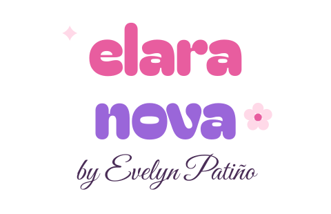
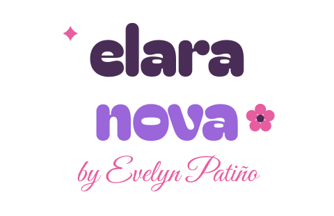
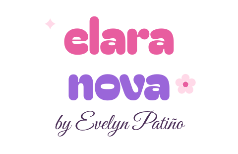

logo-primario.svg · sobre crema

logo-nocturna.svg · sobre ciruela

logo-algodon.svg · sobre rosa bebé

logo-sticker.svg · versión calcomanía (sobre cualquier foto)
submark.svg · perfil + marca de agua